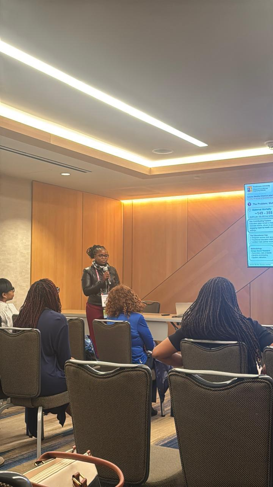

How can AI systems move from retrieving similar information to retrieving useful, safe, and context-aware knowledge?
I am an early-stage researcher working on retrieval-augmented generation (RAG) systems, with a focus on improving how information is retrieved and used in high-stakes domains such as healthcare.
My work explores the limitations of similarity-based retrieval and investigates how combining neural methods with symbolic reasoning can lead to more reliable, interpretable, and meaningful AI systems.